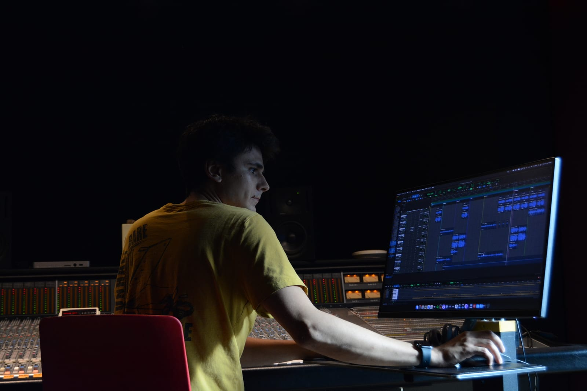

Abbey Road Institute Amsterdam
Music Production & Audio Engineering
2025–2026
Abbey Road Institute Amsterdam

Instrument in development
A sampled instrument built from an upright piano, captured in detail across the strings, action and body for an intimate, tactile sound.
Sampling · Recording · Editing · Instrument Design
Interface previews are coming as development continues. Listen to a short instrument demo below.
Analogue studio recording project developed around an organic, performance-focused approach.
Production · Recording · Neve VR Legend · Studer Tape
Live recording project capturing intimate performances in unique spaces.
Recording · Mixing · Production
Live recording sessions at Paradiso Amsterdam.
Recording · Mixing · Engineering
Recording Assistant
Assisted during recording sessions, supporting microphone setup, studio workflow, and technical preparation.
Recording Assistant
Assisted with recording sessions, helping with setup, routing, and general studio workflow.
Studio Assistant
Additional recording and production sessions involving setup, editing, and technical support.
Erik Magnifico is an audio engineer and music producer based in Amsterdam. His work moves between studio recordings, intimate live sessions, mixing and sampled-instrument development.
Starting with classical violin and later expanding to piano, guitar and keys, he learned music from inside the performance. That perspective shapes how he listens to timing, tone, dynamics and arrangement before reaching for a technical solution.
Whether capturing a live room or refining a mix, the aim is the same: make deliberate choices, communicate clearly and preserve what makes the performance feel alive.
Music Production & Audio Engineering
2025–2026
Practice & tools
Hands-on work across studio recording, live sessions and sampled-instrument development.
Studio and location recording for acoustic instruments and live sessions, including multi-mic instrument sampling.
Detailed session editing, stereo mixing and Dolby Atmos music workflows for recorded music and concert sessions.
Pro Tools, Ableton Live and Logic Pro for tracking, editing, production and mix preparation.
Final tonal balance, dynamics and delivery preparation for consistent playback across platforms and formats.